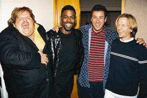

News from two weeks ago
News from three weeks ago
TOP STORY:
G'KAR Voted time man of the year, narrowly beats out Sheridan, Ivanova, Garibaldi and ICP.
Says G'Kar,"It is a great honor and I accept it with my humblest gratitudes." Both Lando Molari and Matt Perry claim that the contest was rigged and that they should have won. "I should have won, the contest was rigged, i demand a recount for all that is fair." -Lando Molari "Uh this sucks!" -Matt Perry. Also considered but non winning, K Miller, Chai Kao, NavBoot, Quest <aol> 2846, Tony "wrestling dude who added me to his listserv for no reason" Herbers, Tia Kutschia, Nicole Winn, Mitzi Marie Emrich, Mark Acheson, ICP, Heathen, benilda de andrade, Hulk Hogan, George Muresan, Jerry Sinefeld, Kramer, and many others.

Chris Farley Resurrected in a bizarre vodoo ritual, People in Louisiana suspected
"Since I'm back from the dead, I'm going to eat every thing i can." Says a strangely emaciated Farley. It is rumored that Farley lost over 300 lbs.while dead. The ceremony to bring him back involved 2 gallons of strawberry yougart, 1 slaughtered lamb, 6 tubs filled with chili, 200 mexican peasants singing,"eins, swei, drei, thats how we make the tacos." , and of course Chris Farleys disentombed corpse. Says fellow comic Adam Sandler,"Man this is Ragin', and speakin' of ragin', lets get this kegger going." Farley imediately proceeded to put the 300 lbs. back on.

Dinosuars all die in a fiery storm of meteors

millions of years ago."Grarrararrarrarararararararraaaaaa." - T-Rex. "Arrarararargaraararaaggaarrarara." - Ceratopsionoid. "That story was lame and completely irrelavent. It might..... have.... been news... millions.... of years ago.....when I was a ......kid" - Walter Conkite. "Eat My Shorts." -Bart Simpson " I didn't end the reign of the dinosaurs, but i will be tireless in my search for the real killers." O.J. simpson.
This photo was taken using a kodak camera, gold film, a telephoto lense, special goggles, a tripod, a bottle of sunscreen, special fingerless gloves, a profeesional photographer, and a TIME MACHINE. (editors note: the time machine was by far the toughest item of the bunch to obtain, seeing as how they haven't been invented yet.)
"Ha Ha, screw you justice systeme and the American public." -Quothe Bill Gates

In a Related Story:
Win 98 delayed again, BTW nobody cares
"Ha Ha, screw you justice systeme and the American public." -Quothe Bill Gates
"I don't care."- ICP
13 once again voted top number, just sqeaks by the numbers 42 and 1066 in a really close race.

And here's one from the I caught a fish this big, but I'm still a dork dept.
Senator Sheckles Kennedy of Massechuessetts today caught this rather sizable catfish. But he's still a dork. The camera doesn't lie. Say's Sheckle,"I farted on my hook and the smell attracted this monterific catfish. I am not a dork." Say's Mattew Perry in Voldavlostak Russia,"He's a dork." Say's Saq,"He's a dork, but he used to work for the postal service before he became a senator, so i wouldn't mess with him." Say's Kennedy of MTV,"Thank god I'm not related to that dork." You'd think being a senator and being related to the prestigious Kennedy family would have some cache but it doesn't. Rumor has it fellow dork Bill Gates bought the election for him.

sys admin baffled!?! Says Habib,"I am without figuring out on the subject." Says Matt Perry,"I don't really give a shit, since I graduated and I already have my own crappy provider." He continues,"Why are you asking me, are you threatning me, are you afraid of my bungjolio, i am the great cornholio, i need tp for my bunghole, did you bring me tp." at this point the news crew takes away his sugar and subdues him.

In a related story:
The premise of the show is the 2 of them driving around in a tricked out 82 Van painted black with red stripes with 6 strangers driving around talking about sex, having adventures, and of course solving fictional crimes. Says a surprised shaq,"I know I got skillz."flashing a million dollar grin. Matt Perry could not be reached for comment.

This page Copyright 1999